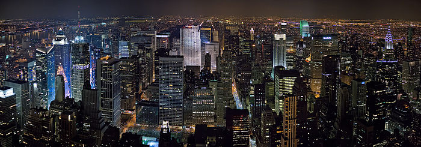

Меню
Нью-Йорк

Нью-Йорк (англ. New York City) — крупнейший город США, входящий в одну из крупнейших агломераций мира. Население города составляет 8 336 697 человек (2012), агломерации — 23,9 млн (по данным на 2012 год). Нью-Йорк расположен на берегу Атлантического океана в юго-восточной части штата Нью-Йорк. Город был основан в начале XVII века голландскими колонистами. До 1664 года он назывался Новый Амстердам.
Нью-Йорк включает 5 районов (боро): Бронкс, Бруклин, Куинс, Манхэттен и Статен-Айленд. Основные достопримечательности расположены в боро Манхэттен. Среди них: исторические небоскрёбы (Эмпайр-стейт-билдинг, Крайслер-билдинг), Рокфеллеровский центр, Вулворт-билдинг, художественный Метрополитен-музей, Метрополитен-опера, Музей Соломона Гуггенхайма (живопись), Американский музей естественной истории (скелеты динозавров и планетарий), легендарный отель «Челси», штаб-квартира ООН, Гарлем.
Нью-Йорк — важнейший мировой финансовый, политический, экономический и культурный центр.
Copyright © 2014. Все права защищены.